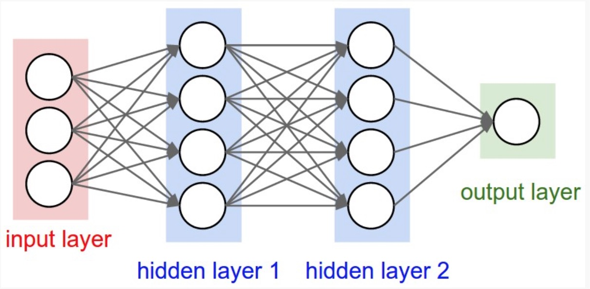
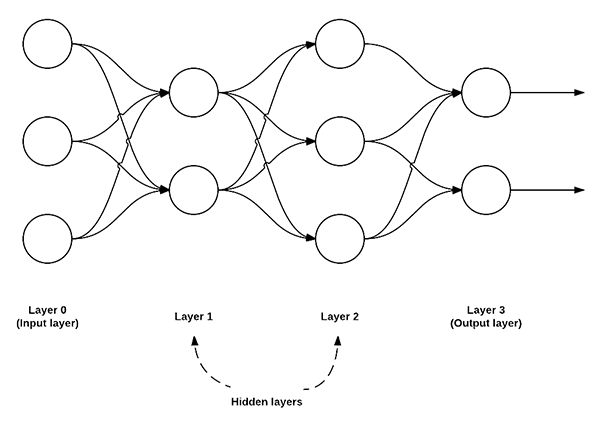
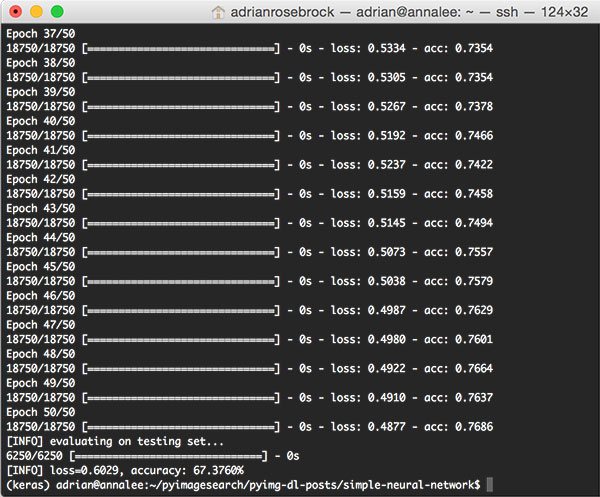

1. 使用 Python and Keras 构建 一个简单的神经网络 🔗
在开始之前，我们先快速复习一下当前最通用的神经网络架构：前馈网络。
我们接下来将写一个 Python 代码来定义我们的前馈神经网络，然后将其运用到 Kaggle Dogs vs. Cats(https://www.kaggle.com/c/dogs-vs-cats/data) 分类比赛中。这比赛的目标是，给出一张图像，然后区分它是猫还是狗。
最后，我们将检查我们的神经网络程序的区分结果，然后再讨论一下如何继续优化我们的架构，使结构更精确。
2. 前馈神经网络 🔗
目前有很多很多的神经网络架构，其中最通用的一种架构是前馈网络。

上图是一个简单的前馈神经网络示意图，该前馈网络具有三个输入节点，一个具有两个节点的隐藏层，一个具有三个节点的隐藏层，还有两个节点的输出层。
在这种类型的架构中，要在这两个节点之间建立连接，必须要求这两个节点是 layer i 中的节点连接到 layer i+1 中的节点（这也是前馈网络这个术语的由来；前馈网络不允许反向连接，或者层内连接）。
并且，layer i 中的节点，必须完全连接（fully connected）到 layer i+1 中的节点。也就是说，layer i 中的每一个节点，必须连接到 layer i+1 中的每个节点。如上图所示，在 layer 0 和 layer 1 中，一共有 2 x 3 = 6 个节点 — 这就是完全连接（fully connected），或者可以缩写为 FC。
我们通常使用一系列的整数来快速简洁地描述每个 layer 中的节点。
例如，上图的前馈网络，我们可以称之为 3-2-3-2前馈神经网络：
- Layer 0 包含 3 个输入，我们可将其定义为 Xi。这些输入值可能是特征矢量的原始像素强度或矢量条目。
- Layer 1 和 Layer 2 是隐藏层（hidden layers），分别包含两个和三个节点。
- Layer 3 是输出节层（output layer），或叫可见层（output layer）。在这里网们将获得神经网络输出的分类。输出层可能有很多输出节点，每一个分类都对应着一个潜在的输出。在 Kaggle Dogs vs. Cats 的分类中，我们有两个输出节点，猫和狗。如果还有其他分类，就会有另一个与之对应的输出节点。
3. 使用 Python 和 Keras 实现我们的神经网络 🔗
现在我们已经理解了前馈神经网络的基本知识，接下来让我们使用 Python 和 Keras 实现我们用于图像分类的神经网络。
在开始之前，你需要在你的电脑上安装 Keras 这个框架。
接下来，新建一个名为 simple_neural_network.py 的文件，然后开始编码：
# import the necessary packages
from sklearn.preprocessing import LabelEncoder
from sklearn.cross_validation import train_test_split
from keras.models import Sequential
from keras.layers import Activation
from keras.optimizers import SGD
from keras.layers import Dense
from keras.utils import np_utils
from imutils import paths
import numpy as np
import argparse
import cv2
import os
在这段代码中，我们引入我们需要的 Python 的包。我们将使用 scikit-learn 和 Keras 来一起实现我们的函数。在这之前，你最好也需要知道怎么配置开发环境中的 Keras。
同时我们也需要用刀 imutils 这个包，这个包可以方便我们使用 OpenCV。如果你还没有安装 imutils，则先安装：
pip install imutils
接下来，我们需要定义一个函数，来接收图像，并且得到图像的原始像素强度。
为了完成这个目标，我们先定一个名为 image_to_feature_vector 的函数，它接受两个输入，一个是 image，另一个是 size：
def image_to_feature_vector(image, size=(32, 32)):
# resize the image to a fixed size, then flatten the image into
# a list of raw pixel intensities
return cv2.resize(image, size).flatten()
我们将调整图像，使我们收集到的图像都具有相同的矢量特征大小。这也是我们使用神经网络的一个先决条件，每张图像都必须由一个矢量来表示。
在这个函数里面，我们需要将图像调整为 32 x 32 像素，然后将图像转化为 32 x 32 x 3 = 3,072-d 的特征矢量。
接下来的代码，将处理解析命令行参数，注意其中的一些初始化操作：
# construct the argument parse and parse the arguments
ap = argparse.ArgumentParser()
ap.add_argument("-d", "--dataset", required=True,
help="path to input dataset")
args = vars(ap.parse_args())
# grab the list of images that we'll be describing
print("[INFO] describing images...")
imagePaths = list(paths.list_images(args["dataset"]))
# initialize the data matrix and labels list
data = []
labels = []
我们使用 --dataset 参数来定义输入 Kaggle Dogs vs. Cats 图像的目录。这些图像图可以从 https://www.kaggle.com/c/dogs-vs-cats/data 这里下载。
imagePaths = list(paths.list_images(args["dataset"])) 这一行用来收集输入的图像。第 31 行 和第 32 分别初始化 data 和 labels 列表。
现在我们已经有了 imagePaths ，接下来就可以循环处理它们中的每一项，把图像转换为特征矢量，然后将其添加到 data 和 labels 列表：
# loop over the input images
for (i, imagePath) in enumerate(imagePaths):
# load the image and extract the class label (assuming that our
# path as the format: /path/to/dataset/{class}.{image_num}.jpg
image = cv2.imread(imagePath)
label = imagePath.split(os.path.sep)[-1].split(".")[0]
# construct a feature vector raw pixel intensities, then update
# the data matrix and labels list
features = image_to_feature_vector(image)
data.append(features)
labels.append(label)
# show an update every 1,000 images
if i > 0 and i % 1000 == 0:
print("[INFO] processed {}/{}".format(i, len(imagePaths)))
现在 data 列表包含每个输入图像的扁平化 32 x 32 x 3 = 3,072-d 表示。当然，在我们开始训练我们的神经网络之前，我们首先要做一些预处理：
# encode the labels, converting them from strings to integers
le = LabelEncoder()
labels = le.fit_transform(labels)
# scale the input image pixels to the range [0, 1], then transform
# the labels into vectors in the range [0, num_classes] -- this
# generates a vector for each label where the index of the label
# is set to `1` and all other entries to `0`
data = np.array(data) / 255.0
labels = np_utils.to_categorical(labels, 2)
# partition the data into training and testing splits, using 75%
# of the data for training and the remaining 25% for testing
print("[INFO] constructing training/testing split...")
(trainData, testData, trainLabels, testLabels) = train_test_split(
data, labels, test_size=0.25, random_state=42)
data = np.array(data) / 255.0 行将输入的数据范围调整到 [0, 1] 之间，labels = np_utils.to_categorical(labels, 2) 这一行将整数转换为矢量（在我们训练神经网络的交叉熵损失函数中需要用到）。
接下来的两行，我们就开始初始化我们的训练和测试代码，75% 的数据用来训练，25% 的数据用来测试。
现在我们将使用 Keras 来定义我们的神经网络：
# define the architecture of the network
model = Sequential()
model.add(Dense(768, input_dim=3072, init="uniform",
activation="relu"))
model.add(Dense(384, init="uniform", activation="relu"))
model.add(Dense(2))
model.add(Activation("softmax"))
上面的代码就即用来构建我们的神经网络结构，一个 3072-768-384-2 前馈神经网络。
我们的 input layer 有 3072 个节点，在我们输入的扁平化图像厘米，每个节点有 32 x 32 x 3 = 3,072 个原始像素强度。
我们也有两个 hidden layer，分别有 768 和 384 个节点。这些节点的数目通过交叉验证和调整超参数实验来确定。
Output layer 包含两个节点，分别是猫和狗的类标签。
我们将在网络的顶部定义一个名为 softmax 的函数，这个函数将会得出实际输出类标签的概率。
接下来将使用 [Stochastic Gradient Descent (SGD)] (https://en.wikipedia.org/wiki/Stochastic_gradient_descent) 来训练我们的模型：
# train the model using SGD
print("[INFO] compiling model...")
sgd = SGD(lr=0.01)
model.compile(loss="binary_crossentropy", optimizer=sgd,
metrics=["accuracy"])
model.fit(trainData, trainLabels, nb_epoch=50, batch_size=128,
为了训练我们的模型，我们将SGD的学习率参数设定为0.01。我们将使用 binary_crossentropy 损失函数也是如此。
在大多数情况下，你需要使用交叉熵 crossentropy ，但由于只有两个类标签，所以我们使用 binary_crossentropy。如果类标签数量大于 2，请确保使用交叉熵。
这个网络允许对 50 epochs 进行训练，意味着模型将看到对每个图片单独进行 50 次训练，以便了解底层的图案。
最后的代码块评估我们的Keras神经网络的测试数据：
# show the accuracy on the testing set
print("[INFO] evaluating on testing set...")
(loss, accuracy) = model.evaluate(testData, testLabels,
batch_size=128, verbose=1)
print("[INFO] loss={:.4f}, accuracy: {:.4f}%".format(loss,
accuracy * 100))
4. 使用构建的神经网络来分类图片 🔗
为了使用 simple_neural_network.py 这个脚本，请确保：
- 使用完整代码
- 下载 Kaggle Dogs vs. Cats [https://www.kaggle.com/c/dogs-vs-cats/data](https://www.kaggle.com/c/dogs-vs-cats/data) 的图像，并保存在某个目录如 kaggle_dogs_vs_cats
完整代码如下：
# USAGE
# python simple_neural_network.py --dataset kaggle_dogs_vs_cats
# import the necessary packages
from sklearn.preprocessing import LabelEncoder
from sklearn.cross_validation import train_test_split
from keras.models import Sequential
from keras.layers import Activation
from keras.optimizers import SGD
from keras.layers import Dense
from keras.utils import np_utils
from imutils import paths
import numpy as np
import argparse
import cv2
import os
def image_to_feature_vector(image, size=(32, 32)):
# resize the image to a fixed size, then flatten the image into
# a list of raw pixel intensities
return cv2.resize(image, size).flatten()
# construct the argument parse and parse the arguments
ap = argparse.ArgumentParser()
ap.add_argument("-d", "--dataset", required=True,
help="path to input dataset")
args = vars(ap.parse_args())
# grab the list of images that we'll be describing
print("[INFO] describing images...")
imagePaths = list(paths.list_images(args["dataset"]))
# initialize the data matrix and labels list
data = []
labels = []
# loop over the input images
for (i, imagePath) in enumerate(imagePaths):
# load the image and extract the class label (assuming that our
# path as the format: /path/to/dataset/{class}.{image_num}.jpg
image = cv2.imread(imagePath)
label = imagePath.split(os.path.sep)[-1].split(".")[0]
# construct a feature vector raw pixel intensities, then update
# the data matrix and labels list
features = image_to_feature_vector(image)
data.append(features)
labels.append(label)
# show an update every 1,000 images
if i > 0 and i % 1000 == 0:
print("[INFO] processed {}/{}".format(i, len(imagePaths)))
# encode the labels, converting them from strings to integers
le = LabelEncoder()
labels = le.fit_transform(labels)
# scale the input image pixels to the range [0, 1], then transform
# the labels into vectors in the range [0, num_classes] -- this
# generates a vector for each label where the index of the label
# is set to `1` and all other entries to `0`
data = np.array(data) / 255.0
labels = np_utils.to_categorical(labels, 2)
# partition the data into training and testing splits, using 75%
# of the data for training and the remaining 25% for testing
print("[INFO] constructing training/testing split...")
(trainData, testData, trainLabels, testLabels) = train_test_split(
data, labels, test_size=0.25, random_state=42)
# define the architecture of the network
model = Sequential()
model.add(Dense(768, input_dim=3072, init="uniform",
activation="relu"))
model.add(Dense(384, init="uniform", activation="relu"))
model.add(Dense(2))
model.add(Activation("softmax"))
# train the model using SGD
print("[INFO] compiling model...")
sgd = SGD(lr=0.01)
model.compile(loss="binary_crossentropy", optimizer=sgd,
metrics=["accuracy"])
model.fit(trainData, trainLabels, nb_epoch=50, batch_size=128,
verbose=1)
# show the accuracy on the testing set
print("[INFO] evaluating on testing set...")
(loss, accuracy) = model.evaluate(testData, testLabels,
batch_size=128, verbose=1)
print("[INFO] loss={:.4f}, accuracy: {:.4f}%".format(loss,
accuracy * 100))
然后，就可以像下面这样运行：
$ python simple_neural_network.py --dataset kaggle_dogs_vs_cats
运行后的程序输出如下：

在我的 Titan X GPU 的电脑上，整个程序的执行，包括特征提取、训练神经网络、评估测试数据，一共花了 1m 15s。训练数据的准确率大约为 76%，测试数据的准确率大约为 67%。
大概 9% 的准确率差异，也是很常见的，这跟训练测试精度，和有限的测试数据相关。
在上面的程序中，我们最终获得了 67.376％ 的精度，这也是比较高的精度了。当然，我们还可以很容易地通过使用卷积神经网络获得大于 95％ 的准确率。
5. 总结 🔗
在上面的内容中，我示范了如何通过 Python and Keras 来构建和训练神经网络。我们将神经网络运用到了 Kaggle Dogs vs. Cats 的测试中，仅仅通过每张图片的原始像素强度，我们就最终得到了 67.376% 的精度。
Github Issue: https://github.com/nodejh/nodejh.github.io/issues/3